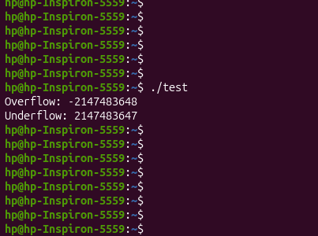

Stores whole numbers. On a 32-bit/4-byte system, or 64-bit system, will take up 4 bytes (32 bits) of memory. Can store values ranging from -2,147,483,648 to 2,147,483,647. You can manipulate how many bytes of memory are used to store the integer, and if it can store negative numbers, by adding type modifiers to the front of int. (short, long, signed, unsigned)
Syntax:
[Type_modifier] [size_modifier] int variable_name = value;
1.Declaring Integers:
To declare a variable in C,
we give it a type and a name.
For example: int age;.
2.Assignment:
We can assign it a value by adding ‘=’ and the value.
For example: int age = 25;
If you already declared just use age=25;
3.No decimal points:
Integers can not have decimal points.
If we were to store 12.99 in an integer variable,
in C it will round down to 12.
In C, signed and unsigned are type specifiers used to dictate if a variable can store negative values or only non-negative values (0 and positives).
Can hold negative values, 0 and positive values.
Default:
As standard, integer variables in C are signed integers.
Therefore declaring int x; is the same as declaring signed int x;.
Memory usage:
Within a standard 4 byte (32-bit) signed int,
the left most bit (bit 1) is used to represent
if the number is positive or negative.
This leaves 31 bits to represent the number.
Range of values (4 bytes):
-2147483648 to +2147483647.
Format Specifier:
%d or %i
int a = -45;
signed int b = -45;
signed c = 100;
An unsigned integer can be used to represent only positive values and 0. As there is no need for one bit to be allocated for the sign of the number, all bits available in memory are used to store the magnitude of the number. This means that the maximum positive value storable in an unsigned integer is twice as large as a signed integer of the same size.
Memory:
No sign bit, so the value in decimal will be a positive number.
All 32 bits can be used.
Range (for a 4 byte variable):
Between 0 and 4294967295 ( 0 to 2³²-1).
Specifiers:
%u (Or hex with %x, or Octal with %o.)
unsigned int a = 10;
unsigned a = 10;
When playing with numbers in C, make sure about the range in each and every case. If not properly checked this may lead to UB(undefined behaviour).
An overflow/underflow of signed integers in C results in undefined behaviour. This means that there is no specification within the C language governing what happens when a value is calculated for a signed integer that cannot be represented by the integer type.
Overflow:
The result of an arithmetic operation exceeds the maximum possible value of the data type.
Underflow:
The result of an arithmetic operation is less than the minimum possible value of the data type.


Small explanation:
Overflow:
a = 2147483647 (maximum value of a 32-bit signed integer).
When increased by 1, as we have exceeded the maximum limit of 32-bit signed integers,
the binary representation of the number wraps around.
This causes underflow to occur and returns -2147483648.
Underflow:
b = -2147483648 (minimum value of a 32-bit signed integer).
When decreased by 1, as we have exceeded the minimum limit of 32-bit signed integers,
the binary representation of the number wraps around.
This causes overflow to occur and returns 2147483647.
1.The number of views videos have on YouTube was originally stored as a 32-bit signed integer,
meaning it could count up to a maximum of 2,147,483,647 views.
However, in December 2014, PSY's Gangnam Style reached this number and
caused an overflow error.
The counter was upgraded to a 64-bit signed integer,
allowing up to 9,223,372,036,854,775,807 views.
2.This number also causes the Year 2038 Problem.
As older systems store the time since 1970 in a 32-bit integer,
on January 19th 2038, they will overflow causing a reset to year 1901!